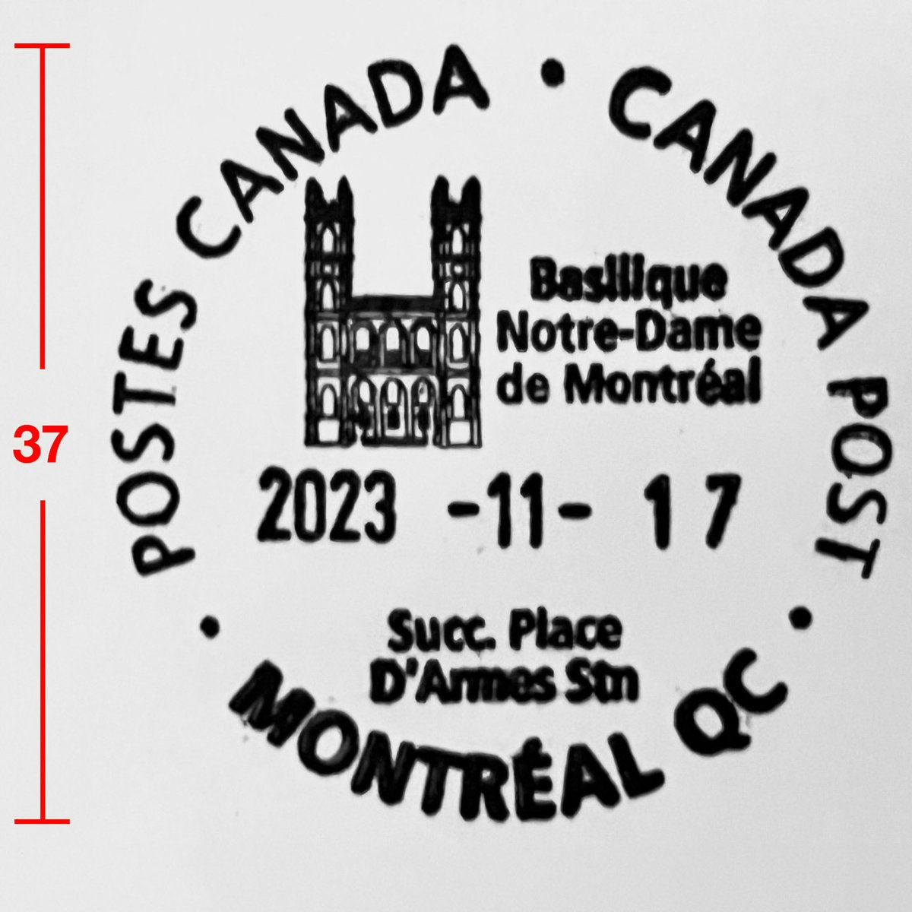

BP Montréal Place d'Armes pictorial cancel
Basilique Notre-Damede Montréal – Succ. Place D · Basilica
- Status
- Active
- Run dates
- 2020-01-01 to 2031-12-31
- Design
- "Basilique Notre-Damede Montréal / Succ. Place D"Armes Stn"; Notre-Dame Basilica
- Ink colour
- Black
- Designer
- Unknown
- Post office
- BP Montréal Place d'Armes
157 Rue St-Antoine O
Montreal, QC
H2Y 1L0 - Subjects
- architecture, church, religion
- Notes
- This design possibly existed for another 12 years before 2020.
Collect it by mail. Send your stamped covers, with a stamped return envelope, to the post office address above (check the notes first). How to collect pictorial cancels by mail · en français
 BP Montréal Place d'ArmesCityscape
BP Montréal Place d'ArmesCityscape BP Montréal PL-DesjardinsHeart
BP Montréal PL-DesjardinsHeart